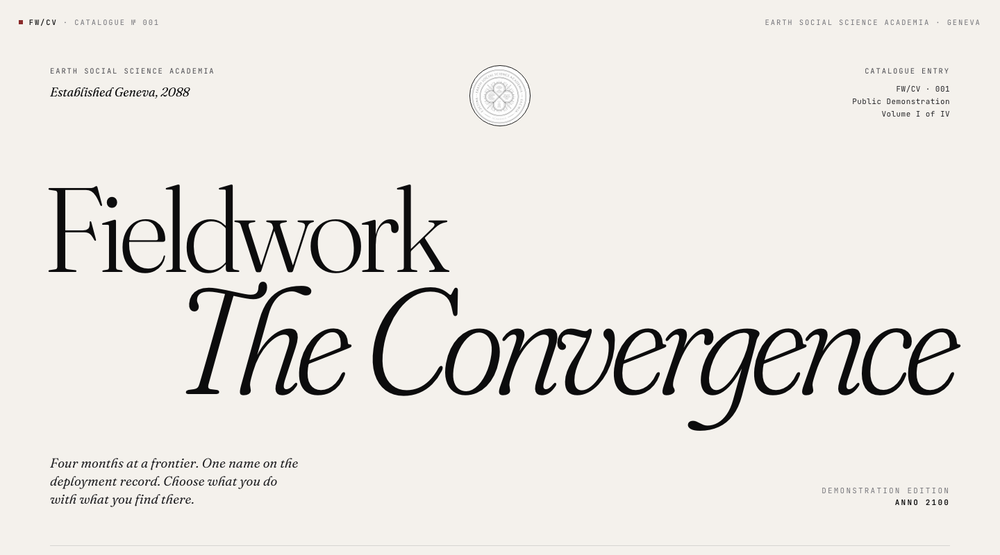

Advanced Research Methods
The Convergence exam
Claude and I built a personalized final exam for each of 15 students. Each student did fieldwork in the year 2100 with non-human participants: sperm whales, beavers, forest fungal networks or an alien species. Each story turned on the methods problem that student expected to find hardest in their own thesis, and each student's choices reappeared in two classmates' exams.
Code under MIT, content under CC BY 4.0. Free to adapt.